3．符号体系
代数上的进步是引用了较好的符号体系，这对它本身和分析的发展比16世纪技术上的进展远为重要。事实上，采取了这一步，才使代数有可能成为一门科学。在16世纪以前，自觉运用一套符号以使代数的思路和书写更加紧凑更加有效的人只有丢番图。记号上的所有其他变动基本上是标准文字的缩写，而且颇为随便。在文艺复兴时代，代数的普遍书写方式仍是文章式的，就是说用些特殊的字眼、缩写，当然还有数字符号。
16世纪中引进符号体系的压力无疑来自迅速发展的科学对数学家提出的要求，正如计算方法的改进反映了这种技术的日益增多的应用。不过改进是断续进行的。许多改变是偶然作出的，而且很清楚，16世纪的人们肯定没有体会到符号体系能对代数起多大作用，甚至在引进符号体系方面迈出了决定性的前进步伐以后，数学家也并不立即采纳。
从15世纪起，最早的缩写也许就是用p代表plus（加），用m代表minus（减）。但在文艺复兴时代，特别是在16，17世纪中，已引用了一些特殊的符号。＋和-这两个符号是15世纪德国人引入的，用来表示箱子重量的超亏，后被数学家袭用。这些记号出现在1481年以后的手稿中。以符号×代表“乘”是奥特雷德首创的，但莱布尼茨合理地加以反对，因它易于同x相混。
＝号是1557年剑桥的雷科德（Robert Recorde，1510—1558）引入的，他写了第一篇英文的代数论文《砺智石》（The Whetstone of Witte，1557）。他说他所知道的最相像的两件东西是两根平行线，所以这两根线应该用来表示相等。韦达起初书写“aequalis”，以后用～表示相等。笛卡儿用∝表示相等。＞和＜这两个符号是哈里奥特首创的。括号是1544年出现的。方括号和花括号是大约从1593年起由韦达引入的。平方根号
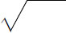
是笛卡儿采用的，但他把立方根号写为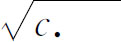
。我们不妨提出以下几点，作为当时一些书写方式的例子。卡丹用表示平方根，用p表示加，用m表示减，他把今日的
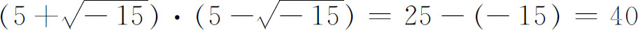
写成
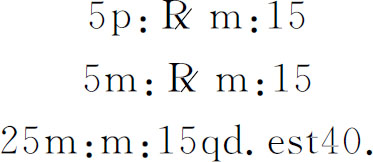
他又把
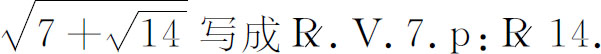
这里V表示其后一切都在根号之下。
用符号表示未知量及未知量的乘幂这件事出现缓慢是颇为惊人的，因为这种记法既简单而且在实用上又非常有价值。（当然，丢番图已采用了这种符号。）16世纪早期的作者如帕乔利把未知量称作radix（拉丁文“根”）或res（拉丁文“东西”）、cosa（意大利文“东西”）和coss（德文“东西”），因此，在当时代数是以“cossic”术（意即求根术。——译者）之名出现的。卡丹在他的《重要的艺术》中把未知量称作rem ignotam（不知道的东西）。他把x2＝4x＋32写作qdratu aeqtur 4 rebus p：32(5)。他把常数项32称作numero。名称与记法因人而大有差异，许多符号是从缩写变来的。例如，字母R曾作为未知量的符号之一，因它是res的缩写。二次幂记为Z（来自zensus），称作quadratum或censo。C取自cubus，用来表示x3。
以后逐渐有人用指数来表示x的乘幂。我们可能记得，指数附在数字上的记法是奥雷姆在14世纪时就采用了的。1484年许凯在《三部曲》里用123，105和1208表示12x3，10x5和120x8。他又用120表示12x0，用71m表示7x-1。这样，83，71m equals（等于）562就表示8x3·7x-1＝56x2。
邦贝利在他的《代数》一书中使用了tanto这个字而没有使用cosa。他把x，x2和x3写成
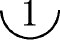
，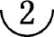
和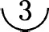
。例如，1＋3x＋6x2＋x3就成了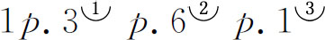
。1585年，斯蒂文把这个式子写成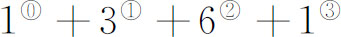
。斯蒂文还用分数指数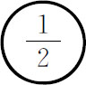
表示平方根，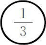
表示立方根等。梅齐利亚克（Claude Bachet de Méziriac，1581—1638）则喜欢把x3＋13x2＋5x＋2写成1C＋13Q＋5N＋2。韦达也用同样的记法来写数字系数的方程。笛卡儿曾颇为有系统地采用正整数指数。他把
1＋3x＋6x2＋x3写成1＋3x＋6xx＋x3．
他和别的人偶尔也用x2这种写法。对较高的乘幂，他用x4，x5，…来记，但不用xn。牛顿使用了正指数、负指数、整数指数和分数指数，如x5/3和x-3。当高斯（Carl Friedrich Gauss）在1801年采用x2代替xx后，x2就变成了标准写法。
代数性质上最重大的变革是由韦达在符号体系方面引入的。他受的专业训练是律师，曾以这一身份在布列塔尼（Brittany）议会里工作过，以后当那瓦尔（Navarre）的亨利（Henry）亲王的枢密顾问官。当他由于政治上处于反对派地位于1584年至1589年间在野时，就献身研究数学。总的说来，他把数学当作一种业余爱好，并自己出资印刷和发行他的著作。正如一个作家所说，这办法是使人不致默默无名的一种保证。
韦达在精神上和意图上是个人文主义者，他希望自己成为古代数学的保存者、发掘者和继承者。他认为创新就是复古翻新。他把他所著的《分析术引论》（In Artem Analyticam Isagoge，1591）(6)说成是“一部复古的数学分析著作”。他在这书中引述了帕普斯所著《数学汇编》的第七篇和丢番图的《算术》。他相信古人是用过一般的代数形式来计算的，而他在他的代数里重新引用，所以这只不过是复活了古人已知道和赞许的一种技巧罢了。
韦达在他政治生涯的间歇期间研读了卡丹、塔尔塔利亚、邦贝利、斯蒂文和丢番图的著作。他从这些名家特别是从丢番图那里，获得了使用字母的想法。以前虽然也有一些人，包括欧几里得和亚里士多德在内，曾用字母来代替特定的数，但他们这种用法不是经常的，是随着兴致所至偶尔用之的。韦达是第一个有意识地、系统地使用字母的人，他不仅用字母表示未知量和未知量的乘幂，而且用来表示一般的系数。通常他用辅音字母表示已知量，用元音字母表示未知量。他把他的符号性代数称作logistica speciosa（类的筹算术）以别于logistica numerosa（数的筹算术）。韦达充分体会到他在研讨一般二次方程ax2＋bx＋c＝0（用我们今天的记法）时，所处理的是整个一类的表达式。韦达在他的《引论》中提出logistica numerosa和logistica speciosa之间的区别时，就规定了算术和代数的分界。他说代数，即所谓logistica speciosa，是施行于事物的类或形式的一种运算方法；而算术，即所谓logistica numerosa，是同数打交道的。这样，代数就一下子成为研究一般类型的形式和方程的学问，因为对一般情形的研究包括了无穷多的特殊情形。但韦达只在正数的情形下才用文字系数。
韦达想把古代希腊著作中隐藏在几何形式下的代数恒等式建立起来，而这些关系在他心目中则认为是在丢番图的著作中可以明显看出来的。事实上如我们在第6章中所指出的，丢番图曾用他所未曾明确指出的前人的恒等式作过许多代数变换。韦达在他所著《分析五篇》（Zeteticorum Libri Quinque）(7)中打算把这些恒等式重新找出来。他把一个一般二次式配成平方并表达出像
a3＋3a2b＋3ab2＋b3＝（a＋b）3
这样的一般恒等式，不过他的写法是
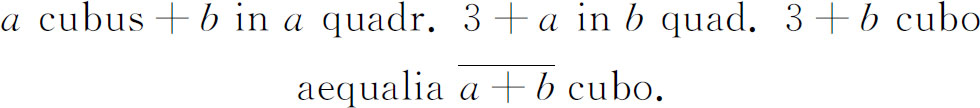
我们可能以为继韦达之后的数学家会立刻想到采用一般系数。但根据我们今日的推断，用字母表示各类数的办法被人认为是符号体系发展史上的一件小事。用文字系数的想法几乎是不知不觉地进入数学的。不过韦达关于符号体系的想法受到后人的赞赏，并被哈里奥特、吉拉德和奥特雷德弄得更加灵活。
对韦达的使用字母作了改进的是笛卡儿。他用字母表中前面的字母表示已知量，用末后的一些字母表示未知量，成为现今的习惯用法。不过笛卡儿也像韦达那样只在正数的情形下用字母表示，虽然他毫不迟疑地进行了文字系数项的相减。一直到赫德（John Hudde，1633—1704）在1657年用字母来表示正数和负数之后，大家才都这样做。牛顿是放手这样做的。
莱布尼茨的名字在符号史上是必须提到的，虽然他在代数上采取这重大步骤的时间较晚。他对各种记法进行了长期的研究，试用过一些符号，征求过同时代人的意见，然后选取他认为最好的符号。以后在概述微积分发展史时，我们将碰到他所创立的一些符号。他肯定认识到好的符号有可能大大节省思维劳动。
所以到17世纪末，数学里已特意（而不是偶然或碰巧地）使用符号并认识到它所能赋予的功效和一般性。只可惜那些并不认识符号重要性的人漫不经心而随意引入的符号太多了，而至今却都已通用。数学史家卡乔里（Florian Cajori）在指出这一事实时曾慨叹说：“我们今日所用的符号，是许多早已摒弃的符号系统中个别残留记号的杂烩。”